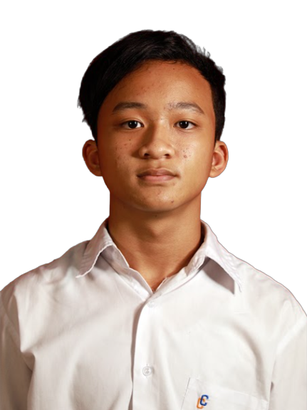
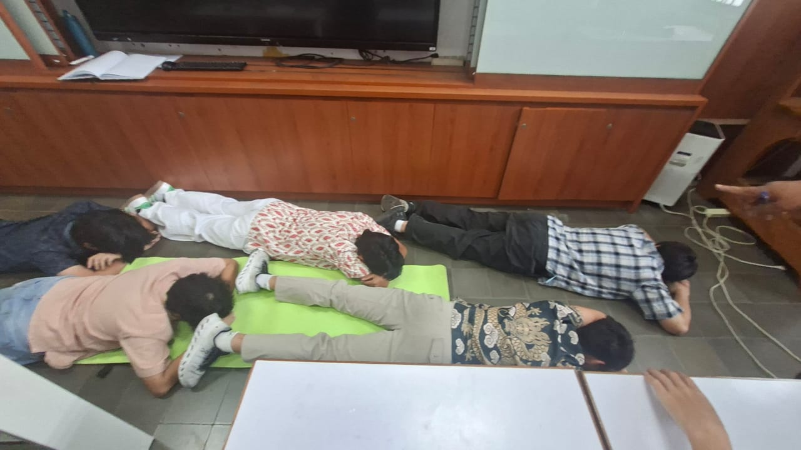

Kami adalah enam orang yang punya satu kesamaan: hobi tidur di kelas. Meski sering kelihatan pasrah dengan hidup, sebenarnya kami semua jenius terselubung— tipe jenius yang kalau dibandingkan, jelas lebih pintar daripada anak TK (ya iyalah). Di balik mata yang 80% waktu tertutup ini, ada otak-otak brilian yang selalu bekerja… saat tidak mengantuk. Kami mungkin tidak selalu terlihat serius, tapi percayalah, kalau sudah saatnya, kami bisa jauh lebih hebat daripada yang orang kira. Untuk sekarang? Tidur dulu sebentar.


Tentang kami